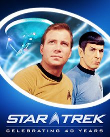

Star Trek
| Star Trek | |
|---|---|
|
 The universal Star Trek franchise logo, as of 2007 |
|
| Creator | Gene Roddenberry |
| Original work | Star Trek: The Original Series (1966) |
| Films and television | |
| Films |
The Motion Picture (1979) The Wrath of Khan (1982) The Search for Spock (1984) The Voyage Home (1986) The Final Frontier (1989) The Undiscovered Country (1991) Generations (1994) First Contact (1996) Insurrection (1998) Nemesis (2002) Star Trek (2009) Star Trek sequel (2013) |
| Television series |
The Original Series (1966–1969) Star Trek: The Animated Series (1973–1974) The Next Generation (1987–1994) Deep Space Nine (1993–1999) Voyager (1995–2001) Enterprise (2001–2005) |
{kind=link}
Star Trek is an American science fiction entertainment franchise created by Gene Roddenberry. The core of Star Trek is its six television series: The Original Series, The Animated Series, The Next Generation, Deep Space Nine, Voyager, and Enterprise. The franchise also includes eleven feature films, dozens of games, hundreds of novels, numerous toy lines and replicas, as well as a themed attraction in Las Vegas (opened in 1998 and closed in September 2008) and at least two traveling museum exhibits of props. Beginning with the original television series and continuing with the subsequent films and series, the franchise has become a cult phenomenon, initiated the creation of the full-fledged language Klingon, and spawned many pop culture references.[1]
The original Star Trek followed the interstellar adventures of James T. Kirk and the crew of an exploration vessel of a 23rd century galactic "United Federation of Planets"—the Starship Enterprise. This series debuted in 1966 and ran for three seasons on NBC, after the network rejected an initial pilot film "The Cage" with a mostly different cast, though this pilot is now routinely packaged with the original series. Following the release of other series in the franchise, the Kirk-led series was retroactively referred to as "Star Trek: The Original Series". These adventures were continued by the short-lived Star Trek: The Animated Series and six feature films. Four more television series were eventually produced, based in the same universe but following other characters: Star Trek: The Next Generation, following the crew of a new Starship Enterprise set a century after the original series; Star Trek: Deep Space Nine and Star Trek: Voyager, set contemporaneously with The Next Generation; and Star Trek: Enterprise, set before the original series, in the early days of human interstellar travel. Four additional feature films were produced, following the crew of The Next Generation, and, most recently, a 2009 movie reboot of the franchise featuring a young crew of the original Enterprise set in an alternate timeline.
The original Star Trek series began production under Desilu Productions. With the merger of Desilu into Paramount Pictures, that studio assumed outright ownership of the Star Trek franchise. In 2006, rights transferred to CBS when it took Paramount's TV division as part of its split from Paramount owner Viacom. However, certain aspects such as feature film and DVD distribution rights still remain under the control of Paramount.
Contents |
[edit] Conception and setting
As early as 1964, Gene Roddenberry drafted a proposal for the science fiction series that would become Star Trek. Although he publicly marketed it as a Western in outer space—a so-called "Wagon Train to the Stars" (like the popular Western TV series[2])—he privately told friends that he was modeling it on Jonathan Swift's Gulliver's Travels, intending each episode to act on two levels: as a suspenseful adventure story and as a morality tale.[3]
Most Star Trek stories depict the adventures of humans and aliens who serve in Starfleet, the space-borne humanitarian and peacekeeping armada of the United Federation of Planets. The protagonists have altruistic values, and must apply these ideals to difficult dilemmas. Many of the conflicts and political dimensions of Star Trek represent allegories of contemporary cultural realities. Star Trek: The Original Series addressed issues of the 1960s,[4] just as later spin-offs have reflected issues of their respective decades. Issues depicted in the various series include war and peace, the value of personal loyalty, authoritarianism, imperialism, class warfare, economics, racism, religion, human rights, sexism, feminism, and the role of technology.[5] Roddenberry stated: "[By creating] a new world with new rules, I could make statements about sex, religion, Vietnam, politics, and intercontinental missiles. Indeed, we did make them on Star Trek: we were sending messages and fortunately they all got by the network."[6]
Roddenberry intended the show to have a highly progressive political agenda reflective of the emerging counter-culture of the youth movement, though he was not fully forthcoming to the networks about this. He wanted Star Trek to show humanity what it might develop into, if only it would learn from the lessons of the past, most specifically by ending violence. An extreme example is the alien species, the Vulcans, who had a very violent past but learned to control their emotions. Roddenberry also gave Star Trek an anti-war message and depicted the United Federation of Planets as an ideal, optimistic version of the United Nations.[7] His efforts were opposed by the network because of concerns over marketability, e.g., they opposed Roddenberry's insistence that the Enterprise have a racially diverse crew.[8]
[edit] Production history

[edit] Beginnings
{kind=link}
In 1964, Roddenberry proposed the original Star Trek TV series, to Desilu Studios as "like Wagon Train, a Wagon Train to the stars."[9] The network rejected the show's first pilot, "The Cage", starring Jeffrey Hunter as Enterprise Captain Christopher Pike; however, NBC executives, still impressed with the concept, made the unusual decision to commission a second pilot: "Where No Man Has Gone Before". The first regular episode of Star Trek aired on Thursday, September 8, 1966.[10] While the show initially enjoyed high ratings, the average rating of the show at the end of its first season dropped to 52nd (out of 94 programs).
Unhappy with the show's ratings, NBC threatened to cancel the show during its second season.[11] The show's fan base, led by Bjo Trimble, conducted an unprecedented letter-writing campaign, petitioning the network to keep the show on the air.[12][13] NBC renewed the show, but moved it from primetime to the "Friday night death slot", and substantially reduced its budget.[14] In protest Roddenberry resigned from his role as producer and reducing his direct involvement in the process of molding Star Trek and Fred Freiberger became producer of the show's third season. Roddenberry did, however, co-author two scripts of the final third season. Despite the protests of a renewed letter-writing campaign, NBC canceled the series.
[edit] Rebirth
After Star Trek's cancellation, Paramount Studios, the company that bought Desilu, sold the syndication rights to Star Trek to help recoup the original series' production losses. Reruns began in the fall of 1969 and by the late 1970s the series aired in over 150 domestic and 60 international markets. This helped Star Trek develop a cult following greater than its popularity during its original run.[15] The series' newfound success led to rumors of reviving the franchise.[16]
Filmation with Paramount Television produced the first post original series show, Star Trek: The Animated Series. It ran on NBC for twenty-two half-hour episodes over two seasons on Saturday mornings from 1973 to 1974. Although short lived, typical for animated productions in that timeslot during that period, the series garnered the franchise's only "Best Series" Emmy Award as opposed to the franchise's later technical ones. Paramount Pictures and Roddenberry began developing a new series, Star Trek: Phase II, in May 1975 in response to the franchise's newfound popularity. However, work on the series ended when the proposed Paramount Television Service folded.
Following the success of the science fiction movies Star Wars and Close Encounters of the Third Kind, Paramount adapted the planned pilot episode of Phase II into the feature film, Star Trek: The Motion Picture. The film opened in North America on December 7, 1979, with mixed reviews from critics. The film earned $139 million worldwide, below expectations but enough for Paramount to create a sequel. The studio forced Roddenberry to relinquish creative control of future sequels.
The success of the critically acclaimed sequel, Star Trek II: The Wrath of Khan, reversed the fortunes of the franchise. While the sequel grossed less than the first movie, The Wrath of Khan's lower production costs made it net more profit. Paramount produced six Star Trek feature films between 1979 and 1991. In response to the popularity of Star Trek's feature films, the franchise returned to television with Star Trek: The Next Generation (TNG) in 1987. Paramount chose to distribute it as a first-run syndication show rather than a network show.[17]
[edit] After Roddenberry
Roddenberry died on October 24, 1991, giving executive producer Rick Berman control of the franchise. Star Trek had become to those within Paramount "the franchise", because of its great success and recurring role as a tent pole for the studio when other projects failed.[18]TNG had the highest ratings of any Star Trek series and became the #1 syndicated show during the last years of its original seven-season run.[19] In response to TNG's success, Paramount released a spin-off series Deep Space Nine in 1993. While never as popular as TNG, the series had sufficient ratings for it to last seven seasons.
In January 1995, a few months after TNG ended, Paramount released a fourth TV series, Voyager. Star Trek saturation reached a peak in the mid-1990s with DS9 and Voyager airing concurrently and three of the four TNG-based feature films released in 1994, 1996, and 1998. By 1998, Star Trek was Paramount's most important property; the enormous profits of "the franchise" funded much of the rest of the studio's operations.[20]:49-50,54Voyager became the flagship show of the new United Paramount Network (UPN) and thus the first major network Star Trek series since the original.[21] The show also ran for seven seasons until 2001, making it the longest-running show in UPN's history.
After Voyager ended, UPN produced Enterprise, a prequel TV series to the original show. Enterprise did not enjoy the high ratings of its predecessors and UPN threatened to cancel it after the series' third season. Fans launched a campaign reminiscent of the one that saved the third season of the Original Series. Paramount renewed Enterprise for a fourth season,[22] but moved it to the "Friday night death slot".[23] Like the Original Series, Enterprise ratings dropped during this time slot, and UPN cancelled Enterprise at the end of its fourth season. Enterprise aired its final episode on May 13, 2005.[24] Fan groups, such as "Save Enterprise", attempted to save the series[25] and tried to raise $30 million to privately finance a fifth season of Enterprise.[25] Though the effort garnered considerable press, the fan drive failed to save the series. The cancellation of Enterprise ended an eighteen-year continuous production run of Star Trek programming on television. The poor box office performance in 2002 of the film Nemesis, cast an uncertain light upon the future of the franchise. Paramount relieved Berman, the franchise producer, of control of Star Trek.
[edit] Reboot
Paramount turned down several proposals in the mid-2000s to reboot the franchise. These included pitches from film director Bryan Singer,[26]Babylon 5 creator J. Michael Straczynski,[27] and Trek actors Jonathan Frakes and William Shatner.[28] The network also turned down an animated web series.[29]
Instead Paramount hired a new creative team to "reboot" the franchise in 2007. Writers Roberto Orci and Alex Kurtzman and Lost producer, J. J. Abrams, had the freedom to reinvent the feel of Trek and alter the canonical timeline. This team created the franchise's eleventh film, titled simply Star Trek, releasing it in May 2009. The eleventh Star Trek film's marketing campaign targeted non-fans, even stating in the film's advertisements that "this is not your father's Star Trek".[30] The film earned considerable critical and financial success, grossing in inflation-adjusted dollars the most box office sales of any other Star Trek film.[31] The plaudits include the franchise's first Academy Award (for makeup). The film's major cast members are contracted for two sequels.[32] Paramount plans to release the sequel to the reboot on May 17, 2013.[33]
[edit] Television series
Six television series make up the bulk of the Star Trek mythos: The Original Series, The Animated Series, The Next Generation, Deep Space Nine, Voyager, and Enterprise. All the different versions in total amount to 726 Star Trek episodes have been produced across the 30 seasons of the TV series, holding the record of second most episodes produced in all spin-offs collectively (Doctor Who holding first place).
[edit] The Original Series (1966–1969)
Star Trek, also known as "TOS" or The Original Series, debuted in the United States on NBC on September 8, 1966.[34] The show tells the tale of the crew of the starship Enterprise and its five-year mission "to boldly go where no man has gone before." The original 1966–1969 television series featured William Shatner as Captain James T. Kirk, Leonard Nimoy as Spock, DeForest Kelley as Dr. Leonard "Bones" McCoy, James Doohan as Montgomery "Scotty" Scott, Nichelle Nichols as Uhura, George Takei as Hikaru Sulu, and Walter Koenig as Pavel Chekov. During the series' original run, it earned several nominations for the Hugo Award for Best Dramatic Presentation and won twice: for the two-parter "The Menagerie" and the Harlan Ellison-written episode "The City on the Edge of Forever". The show's creator, Gene Roddenberry, was not involved in the show during its third and final year of production due to a dispute with NBC, with the exception of having co-authored two episodes produced that year.
After three seasons, NBC canceled the show, and the last original episode aired on June 3, 1969.[35] However, the petition near the end of the second season to save the show signed by many Caltech students and its multiple Hugo nominations would indicate that despite low Nielsen ratings, it was highly popular with science fiction fans and engineering students. The series later became popular in reruns and found a cult following.[34]
Originally presented under the title Star Trek, it has in recent years become known as Star Trek: The Original Series or as "Classic Star Trek"—retronyms that distinguish it from its sequels and the franchise as a whole.
[edit] The Animated Series (1973–1974)
Star Trek: The Animated Series, produced by Filmation, ran for two seasons from 1973 to 1974. Most of the original cast performed the voices of their characters from The Original Series, and many of the original series' writers, such as D. C. Fontana, David Gerrold and Paul Schneider, wrote for the series. While the animated format allowed the producers to create more exotic alien landscapes and life forms, animation errors and liberal reuse of shots and musical cues have tarnished the series' reputation.[36] Although originally sanctioned by Paramount, which owned the Star Trek franchise following its acquisition of Desilu in 1967, Gene Roddenberry often spoke of TAS as non canon.[37]Star Trek writers have used elements of the animated series in later live-action series and movies, and as of June 2007, the Animated Series has references in the library section of the official Startrek.com web site.
TAS won Star Trek's first Emmy Award on May 15, 1975.[38]Star Trek TAS briefly returned to television in the mid-1980s on the children's cable network Nickelodeon. Nickelodeon's Evan McGuire greatly admired the show and used its various creative components as inspiration for his short series called Piggly Wiggly Hears A Sound which never aired. Nickelodeon parent Viacom would purchase Paramount in 1994. In the early 1990s, the Sci-Fi Channel also began rerunning TAS. The complete TAS was also released on Laserdisc format during the 1980s.[39] The complete series was first released in the USA on eleven volumes of VHS tapes in 1989. All 22 episodes were released on DVD in 2006.
[edit] The Next Generation (1987–1994)
Star Trek: The Next Generation, also known as "TNG", takes place about a century after The Original Series (2364–2370). It features a new starship, the Enterprise-D, and a new crew led by Captain Jean-Luc Picard (Patrick Stewart) and Commander William Riker (Jonathan Frakes). The series introduced alien races new to the Federation as crewmembers, including Deanna Troi, a half-Betazoid counselor played by Marina Sirtis and Worf as the first Klingon officer in Starfleet, played by Michael Dorn. It also featured Gates McFadden as Dr. Beverly Crusher, LeVar Burton as chief engineer Geordi La Forge, the android Data portrayed by Brent Spiner, and Dr. Crusher's son Wesley Crusher played by Wil Wheaton. The show premiered on September 28, 1987, and ran for seven seasons, ending on May 23, 1994.[40] It had the highest ratings of any of the Star Trek series and became the #1 syndicated show during the last few years of its original run, allowing it to act as a springboard for ideas in other series. Many relationships and races introduced in TNG became the basis of episodes in Deep Space 9 and Voyager.[19] It earned an Emmy nomination for Best Dramatic Series during its final season. It also received a Peabody Award for Outstanding Television Programming for the episode "The Big Goodbye".[41]
The first two seasons were largely produced by the original creator of Star Trek, Gene Roddenberry. Beginning in Season 3, the primary overseer of the show was Rick Berman who also largely responsible for the remaining Trek television series as well as the films involving the cast of The Next Generation.
Drama shows in that era, as opposed to a talk show or game shows, rarely went into syndication in first run rather than airing on the same network throughout America. Next Generation became one of the most popular syndicated shows of its era and inaugurated a market for syndicated science fiction series.
[edit] Deep Space Nine (1993–1999)
Star Trek: Deep Space Nine, also known as "DS9", takes place during the last years and the immediate post-years of The Next Generation (2369–2375) and aired for seven seasons, debuting the week of January 3, 1993.[42] Like Star Trek: The Next Generation, it aired in syndication in the United States and Canada. Unlike the other Star Trek series, DS9 takes place primarily on a space station rather than aboard a starship.
The show begins after the brutal occupation of the planet Bajor. With the Cardassians gone, the Bajoran people ask the United Federation of Planets to help run a Cardassian built space station, Deep Space Nine, outside of Bajor. After the Federation takes control of the station, the protagonists of the show discover a uniquely stable wormhole that provides immediate access to the distant Gamma Quadrant making Bajor and the station one of the most strategically important locations in the galaxy.[43] The show chronicles the events of the station's crew, led by Commander (later Captain) Benjamin Sisko, played by Avery Brooks, and Major (later Colonel) Kira Nerys, played by Nana Visitor. Recurring plot elements include the repercussions of the lengthy and brutal Cardassian occupation of Bajor, Sisko's spiritual role for the Bajorans as the Emissary of the Prophets, and in later seasons a war with the Dominion.
Deep Space Nine stands apart from earlier Trek series for its lengthy serialized storytelling, conflict within the crew, and religious themes—all elements that critics and audiences praised but Roddenberry forbade in the original series and The Next Generation.[44] Nevertheless, he was informed before his death of DS9, making this the last Star Trek series connected to Gene Roddenberry.[45]
[edit] Voyager (1995–2001)
Star Trek: Voyager ran for seven seasons, airing from January 16, 1995, to May 23, 2001, launching a new Paramount-owned television network UPN. It features Kate Mulgrew as Captain Kathryn Janeway,[46] the first female commanding officer in a leading role of a Star Trek series, and Commander Chakotay, played by Robert Beltran. Voyager takes place at about the same time as Deep Space Nine and the years following that show's end (2371–2378). The premiere episode has the USS Voyager and its crew pursue a Maquis ship (crewed by Federation rebels). Both ships become stranded in the Delta Quadrant about 70,000 light years from Earth.[47] Faced with a 70-year voyage to Earth, the crew must learn to work together and overcome challenges on the long and perilous journey home while also seeking ingenious ways to shorten the return voyage. Like Deep Space Nine, early seasons of Voyager feature greater conflict between its crewmembers than seen in later episodes. Such conflict often arises from friction between "by-the-book" Starfleet crew and rebellious Maquis fugitives forced by circumstance to work together on the same ship. Eventually, though, they settle their differences, after which the overall tone becomes more reminiscent of The Original Series. Voyager, isolated from many of the familiar aspects and races of the Star Trek franchise, faces new races and original plot lines not possible when in a show that takes place in the other Star Trek series. Later seasons, however, brought an influx of characters and races from prior shows, such as the Borg, Q, the Ferengi, Romulans, Klingons, Cardassians as well as cast members of The Next Generation.
[edit] Enterprise (2001–2005)
Star Trek: Enterprise, originally titled Enterprise, is a prequel to the original Star Trek series. It aired from September 26, 2001 to May 13, 2005.[48]Enterprise takes place in the 2150s, some 90 years after the events of Zefram Cochrane's first warp flight and about a decade before the founding of the Federation. The show centers on the voyages of Earth's first warp-five capable starship, the Enterprise, commanded by Captain Jonathan Archer (played by Scott Bakula), and the Vulcan Sub-Commander T'Pol, played by Jolene Blalock.
During the show's first two seasons, Enterprise had an episodic structure, like The Original Series, The Next Generation and Voyager. The third season consisted of one arc, "Xindi mission", which had the darker tone and serialized nature of Deep Space 9. Season 4 consisted of several two to three episode mini-arcs. The final season showed the origins of elements seen in earlier series, and it rectified and resolved some core continuity problems between the various Star Trek series. Ratings for Enterprise started strong but declined rapidly. Although critics received the fourth season very well, both fans and the cast reviled the series finale, partly because of the episode's focus on the guest appearance of members of The Next Generation cast.[49] The cancellation of Enterprise ended an 18-year run of back-to-back new Star Trek shows beginning with The Next Generation in 1987.
[edit] Feature films
Paramount Pictures has produced eleven Star Trek feature films, the most recent released in May 2009[50] with a twelfth in development, scheduled to be released in 2013. The first six films continue the adventures of the cast of The Original Series; the seventh film, Generations was designed as a transition from that cast to The Next Generation television series; the next three films, 8–10, focused completely on the Next Generation cast. Film titles of the North American and UK releases of the films no longer contained the number of the film following the sixth film (the sixth was Star Trek VI: The Undiscovered Country but the seventh was Star Trek:Generations). However, European releases continued using numbers in the film titles until Nemesis. The eleventh film, titled Star Trek, is a prequel/reboot of TOS set in an alternate timeline before James T. Kirk's graduation from Starfleet Academy and promotion to the rank of Captain. A twelfth film is currently in its early stages of production.
| Number | Title | Release date | Cast |
|---|---|---|---|
| 1 | Star Trek: The Motion Picture | December 7, 1979 | The Original Series |
| 2 | Star Trek II: The Wrath of Khan | June 4, 1982 | |
| 3 | Star Trek III: The Search for Spock | June 1, 1984 | |
| 4 | Star Trek IV: The Voyage Home | November 26, 1986 | |
| 5 | Star Trek V: The Final Frontier | June 9, 1989 | |
| 6 | Star Trek VI: The Undiscovered Country | December 6, 1991 | |
| 7 | Star Trek: Generations | November 18, 1994 | The Next Generation* |
| 8 | Star Trek: First Contact | November 22, 1996 | |
| 9 | Star Trek: Insurrection | December 11, 1998 | |
| 10 | Star Trek: Nemesis | December 13, 2002 | |
| 11 | Star Trek | May 8, 2009 | J.J. Abrams cast** |
| 12 | Star Trek sequel | May 17, 2013 (expected) |
* Several characters from the original series have cameos in Star Trek: Generations. William Shatner plays a major role in that film. A few Star Trek: Voyager characters play cameos in First Contact and Nemesis
** Leonard Nimoy of the original series plays a significant role in the 2009 film, Star Trek
[edit] Spin-off media
The Star Trek franchise has a large number of novels, comic books, video games, and other materials, which are generally considered non-canon.
[edit] Books
Since 1967, hundreds of original novels, short stories, and television and movie adaptations have been published. The very first original Star Trek novel to be published was Mission to Horatius by Mack Reynolds, which was published in hardcover by Whitman Books in 1968.
The first publisher of Star Trek fiction aimed at adult readers was Bantam Books. In 1970, James Blish wrote the first original Star Trek novel published by Bantam, Spock Must Die!. Pocket Books is currently the publisher of Star Trek novels.
Prolific Star Trek novelists include Peter David, Diane Carey, Keith R. A. DeCandido, J. M. Dillard, Diane Duane, Michael Jan Friedman, and Judith and Garfield Reeves-Stevens. Several actors and writers from the television series have written books: William Shatner, and John de Lancie, Andrew J. Robinson, J. G. Hertzler, and Armin Shimerman have written or co-written books featuring their respective characters. Voyager producer Jeri Taylor wrote two novels featuring back story for Voyager characters, and screen authors David Gerrold, D. C. Fontana, and Melinda Snodgrass have also penned books.
[edit] Comics
Star Trek-based comics have been published almost continuously since 1967 by several companies including: Marvel, DC, Malibu, Wildstorm, and Gold Key. Tokyopop currently is publishing an anthology of Next Generation-based stories presented in the style of Japanese manga.[51] As of 2006, IDW Publishing secured publishing rights to Star Trek comics[52] and published a prequel to the 2009 film, Star Trek: Countdown.
[edit] Games
The Star Trek franchise also has numerous games in many different formats. Beginning in 1967 with a board game based on the original series and continuing through 2009 with online and DVD games, Star Trek games continue to be popular among fans. The most recent video games of the series are Star Trek: Legacy and Star Trek: Conquest. An MMORPG based on Star Trek called Star Trek Online is developed by Cryptic Studios and published by Perfect World. It is set in the TNG universe approximately 30 years after the events of Star Trek: Nemesis, and not the re-imagined Universe portrayed in JJ Abrams' Star Trek, although it will take into account the events portrayed at the start of the film and in the prequel comics. Star Trek Online was released on February 2, 2010.[53] On June 8, 2010, NECA owned Wiz Kids Games announced that they are developing a Star Trek collectible miniatures game using the HeroClix game system.[54]
[edit] Cultural impact
{kind=link}
The Star Trek media franchise is a multi-billion dollar industry, currently owned by CBS.[55] Gene Roddenberry sold Star Trek to NBC as a classic adventure drama; he pitched the show as "Wagon Train to the Stars" and as Horatio Hornblower in Space.[56] The opening line, "to boldly go where no man has gone before," was taken almost verbatim from a US White House booklet on space produced after the Sputnik flight in 1957.[57] The central trio of Kirk, Spock, and McCoy was modeled on classical mythological storytelling.[56]
Star Trek and its spin-offs have proven highly popular in syndication and are currently shown on TV stations worldwide.[58] The show's cultural impact goes far beyond its longevity and profitability. Star Trek conventions have become popular among its fans, who call themselves "trekkies" or "trekkers". An entire subculture has grown up around the show[59] which was documented in the film Trekkies. Star Trek was the highest-ranked cult show by TV Guide.[60]
The Star Trek franchise inspired some designers of technologies, such as the Palm PDA and the handheld mobile phone.[61][62] Michael Jones, Chief technologist of Google Earth, has cited the tricorder's mapping capability as one inspiration in the development of Keyhole/Google Earth.[63] It also brought teleportation to popular attention with its depiction of "matter-energy transport", with phrases such as "Beam me up, Scotty" entering the vernacular.[64] In 1976, following a letter-writing campaign, NASA named its prototype space shuttle Enterprise, after the fictional starship.[65] Later, the introductory sequence to Star Trek: Enterprise included footage of this shuttle which, along with images of a naval sailing vessel called the Enterprise, depicted the advancement of human transportation technology.
Beyond Star Trek's fictional innovations, one of its greatest and most significant contributions to TV history is its multicultural and multiracial cast. While common in television shows from the 1970s onward, this was controversial and daring in the 1960s. The Enterprise crew included a Japanese helmsman, a Russian navigator, a black female communications officer, and a Vulcan-Terran first officer. Also, controversial at its time, in the episode Plato's Stepchildren, was Captain Kirk's kiss with Lt. Uhura which became a defining moment in television history as it was believed to be American TV's first scripted interracial kiss.[66]
[edit] Parodies
Early TV comedy sketch parodies of Star Trek included a famous sketch on Saturday Night Live titled "The Last Voyage of the Starship Enterprise", with John Belushi as Kirk, Chevy Chase as Spock and Dan Aykroyd as McCoy.[67] In the 1980s Saturday Night Live did a sketch with William Shatner reprising his Captain Kirk role in The Restaurant Enterprise, preceded by a sketch in which he played himself at a Trek convention angrily telling fans to "Get a Life", a phrase that has become part of Trek folklore.[68]In Living Color continued the tradition in a sketch where Captain Kirk is played by a fellow Canadian Jim Carrey.[69]
A feature length film which indirectly parodies Star Trek is Galaxy Quest. This film is based on the premise that aliens monitoring the broadcast of an Earth-based TV series called Galaxy Quest, modeled heavily on Star Trek, believe that what they are seeing is real.[70] Actors from Star Trek mostly thought it to be a brilliant parody.[71][72]
Star Trek has been blended with Gilbert and Sullivan at least twice. The North Toronto Players presented a Star Trek adaptation of Gilbert & Sullivan titled H.M.S. Starship Pinafore: The Next Generation in 1991 and an adaptation by Jon Mullich of Gilbert & Sullivan's H.M.S. Pinafore that sets the operetta in the world of Star Trek has played in Los Angeles and was attended by series luminaries Nichelle Nichols,[73]D.C. Fontana and David Gerrold.[74] A similar blend of Gilbert and Sullivan and Star Trek was presented as a benefit concert in San Francisco by the Lamplighters in 2009. The show was titled Star Drek: The Generation After That. It presented an original story with Gilbert and Sullivan melodies.[75]
Both The Simpsons and Futurama television series and others have had many individual episodes parodying Star Trek or with Trek allusions.[76] An entire series of films and novels from Finland titled Star Wreck also parodies Star Trek.[77]
"The Man Trap" was parodied in one of the series of Turkish films based on the character Turist Ömer.[78]
[edit] Awards and honors
Of the various science fiction awards given for drama, only the Hugo Award dates back as far as the original series. Although the Hugo is mainly given for print-media science fiction, its "best drama" award is usually given to film or television presentations. The Hugo does not give out awards for best actor, director, or other aspects of film production. Before 2002, films and television shows competed for the same Hugo, before the split of the drama award into short drama and long drama. In 1968, all five nominees for a Hugo award were individual episodes of Star Trek, as were three of the five nominees in 1967 (the other two being the films Fahrenheit 451 and Fantastic Voyage). The only Star Trek series to not get even a Hugo nomination are the animated series and Voyager, though only the original series and Next Generation ever won the award. No Star Trek film has ever won a Hugo, though a few were nominated. In 2008, the fan made episode of Star Trek: New Voyages entitled "World Enough and Time" was nominated for the Hugo for Best Short Drama, where it competed with professional episodes from shows such as Doctor Who and Battlestar Galactica.[79]
The prestigious science fiction Saturn Awards did not exist during broadcasting of the original series. Unlike the Hugo, the Saturn Award gives out prizes for best actor, special effects and music, and also unlike the Hugo (until 2002) movies and television shows have never competed against each other for Saturns. The two Star Trek series to win multiple Saturn awards during their run were The Next Generation (twice winning for best television series) and Voyager (twice winning for best actress - Kate Mulgrew and Jeri Ryan). The original series retroactively won a Saturn Award for best DVD release. Several Star Trek films have won Saturns including categories such as best actor, actress, director, costume design, and special effects. However, Star Trek has never won a Saturn for best make-up.[80]
As for non science fiction specific awards, the Star Trek series has won 31 Emmy Awards.[81] The eleventh Star Trek film won the 2009 Academy Award for Best Makeup, the franchise's first Academy Award.[82]
[edit] Crossovers
Several characters within the Star Trek franchise, primary and secondary, often made crossover appearances between one live-action series and another. This included appearances of established characters on premiere episodes of new series, a few long-term transfers from one series to another, and even crossovers between Trek films and television. A few crossover appearances, such as that of Spock on Next Generation and the time-travel of the crew of Deep Space Nine to the era of The Original Series were especially lauded by both fans and critics. At least one crossover, featuring Next Generation characters in the final episode of Enterprise, was poorly received.
[edit] Corporate ownership
At Star Trek's creation, Norway Productions, Roddenberry's production company, shared ownership with Desilu Productions and, after Gulf+Western acquired Desilu in 1967, with Paramount Pictures, the conglomerate's film studio. Paramount did not want to own the unsuccessful show; net profit was to be shared between Norway, Desilu/Paramount, Shatner, and NBC but Star Trek lost money, and the studio did not expect to syndicate it. In 1970 Paramount offered to sell all rights to Star Trek to Roddenberry, but he could not afford the $150,000 ($898,000 today) price.[83]:218,220
In 1989 Gulf+Western renamed itself as Paramount Communications, and in 1994 merged with Viacom.[83]:218 In 2005 Viacom divided into CBS Corporation, whose CBS Television Studios subsidiary retained the Star Trek brand, and Viacom, whose Paramount Pictures subsidiary retained the Star Trek film library and rights to make additional films, along with video distribution rights to the TV series on behalf of CBS.[84][83]:223 Both Viacom and CBS are controlled by National Amusements.[85]
[edit] Notable fan fiction
The online fan-produced Star Trek: Phase II series is permitted by CBS and Paramount Pictures since no profit is being made from it. The son of Star Trek creator Gene Roddenberry, Eugene Roddenberry Jr., has served as consulting producer, and several members the original series cast have given it their support.[86] Both actors and writers involved with official Star Trek have contributed. Actress Denise Crosby has played the grandmother of her Next Generation character, and both George Takei and Walter Koenig have played older versions of the same characters they played on Star Trek. The second episode, entitled "To Serve All My Days", was written by original series writer D.C. Fontana[87] and other former Trek writers have contributed their talent.
One episode World Enough and Time was nominated for the prestigious[88] Hugo award, competing against episodes of Doctor Who, Torchwood, and Battlestar Galactica.[89]
As with other material available only online in the form of "webisodes", the Internet Movie Database lists this as a television series.[90]
[edit] References
- ^ Italie, Hillel (July 2, 2007). "Potter Reaches Cult Phenomenon Status". Seattle Times. Associated Press. http://seattletimes.nwsource.com/html/entertainment/2003769419_webpotter02.html. Retrieved October 19, 2011. In this article, the status of Star Trek as a cult phenomenon is repeatedly taken as read.
- ^ "Gene Roddenberry". The Museum of Broadcast Communications. http://www.museum.tv/eotvsection.php?entrycode=roddenberry. Retrieved October 19, 2011. "Roddenberry described Star Trek as a 'Wagon Train to the stars' because, like that popular series, its stories focused on the 'individuals who traveled to promote the expansion of our horizons.'"
- ^ See David Alexander, "Star Trek Creator. The Authorized Biography of Gene Roddenberry" and interview with Roddenberry in "Something about the Author" by Gale Research Company and chapter 11 of "Trash Culture: Popular Culture and the Great Tradition" by Richard Keller Simon
- ^ Snyder, J. William, Jr. (1995). "Star Trek: A Phenomenon and Social Statement on the 1960s". self-published. http://www.ibiblio.org/jwsnyder/wisdom/trek.html. Retrieved October 19, 2011.
- ^ Johnson-Smith, p 57
- ^ Johnson-Smith, pp 79–85
- ^ Woody Goulart. "Gene Roddenberry — Woody Goulart". Woodygoulart.com. http://woodygoulart.com/wg/trekology/star-trek/gene-roddenberry/. Retrieved October 19, 2011.
- ^ Whitfield, Stephen PE; Roddenberry, Gene (1968). The Making of Star Trek. New York: Ballantine Books. ISBN 0-345-31554-5. OCLC 23859.
- ^ Roddenberry, Gene (March 11, 1964) (PDF). Star Trek is. First Draft. Archived from the original on September 24, 2006. http://web.archive.org/web/20060924140423/http://www.ex-astris-scientia.org/misc/40_years/trek_pitch.pdf. Retrieved June 26, 2009.
- ^ "The numbers game, part one." Broadcasting. Sep. 19, 1966: 58–60.
- ^ Herbert Solow and Robert H. Justman, Inside Star Trek: The Real Story, Pocket Books, 1996, pp.377–394
- ^ StarTrek.com Staff (August 31, 2011). "Bjo Trimble: The Woman Who Saves Star Trek — Part 1". StarTrek.com. CBS Entertainment. http://www.startrek.com/article/bjo-trimble-the-woman-who-saved-star-trek-part-1. "For the record, when NBC seemed to be on the verge of axing Star Trek after a low-rated second season, the Trimbles devised a grassroots letter-writing campaign that saved the show and resulted in a third season."
- ^ Solow & Justman, pp.377–386
- ^ Shatner, Star Trek Memories, pp.290–291
- ^ "Cult Fans, Reruns Give 'Star Trek' an Out of This World Popularity". Milwaukee Journal. July 3, 1972. http://news.google.com/newspapers?id=rx0eAAAAIBAJ&sjid=gX4EAAAAIBAJ&dq=star-trek%20syndication%20%7C%20rerun&pg=6303%2C2206524. Retrieved October 19, 2011.
- ^ Sackett & Roddenberry, 15.
- ^ Alexander, David (February 16, 1995). Star Trek Creator: The Authorized Biography of Gene Roddenberry. Roc. ISBN 0-451-45440-5. http://books.google.com/?id=LJ-Eq73RPWgC.
- ^ Teitelbaum, Sheldon (May 5, 1991). "How Gene Roddenberry and his Brain Trust Have Boldly Taken 'Star Trek' Where No TV Series Has Gone Before : Trekking to the Top". Los Angeles Times (Tribune Company): p. 16. Archived from the original on May 11, 2011. http://www.webcitation.org/5ybc7Wqbr. Retrieved October 19, 2011.
- ^ a b "Star Trek — A Short History". Archived from the original on December 5, 2010. http://web.archive.org/web/20101205052936/http://www.ee.surrey.ac.uk/Contrib/SciFi/StarTrek/history.html. Retrieved August 21, 2006.
- ^ Poe, Stephen Edward (April 1, 1998). A Vision of the Future. Simon and Schuster. ISBN 0-671-53481-5. http://books.google.com/?id=MiJTlrdSkpAC.
- ^ Levesque, John (January 6, 2001). "UPN in Search of Post-'Voyager' Flagship". Seattle PI. Archived from the original on December 3, 2010. http://web.archive.org/web/20101205023950/http://www.seattlepi.com/tv/upn06.shtml. Retrieved June 30, 2009.
- ^ "Fan Groups, Sites Rally on Behalf of Enterprise". startrek.com. May 28, 2004. Archived from the original on January 17, 2010. http://web.archive.org/web/20100117112055/http://www.startrek.com/startrek/view/news/article/5500.html. Retrieved October 19, 2011.
- ^ "UPN's 2004-2005 Schedule" (Press release). UPN. May 20, 2004. Archived from the original on January 17, 2010. http://web.archive.org/web/20100117112055/http://www.startrek.com/startrek/view/news/article/5500.html. Retrieved October 19, 2011.
- ^ "Star Trek: Enterprise Canceled!". Startrek.com. February 3, 2005. Archived from the original on January 11, 2010. http://web.archive.org/web/20100111021654/http://www.startrek.com/startrek/view/news/article/9469.html. Retrieved October 19, 2011.
- ^ a b "Save Enterprise 2005 Outlook". TrekUnited.com. Archived from the original on February 2, 2009. http://web.archive.org/web/20090202180815/http://www.trekunited.com/news/content/view/21/44/1/1/. Retrieved December 18, 2007.
- ^ Fitzpatrick, Kevin (April 12, 2011). "Bryan Singer's TV Star Trek Details Emerge!". Ugo.com. http://www.ugo.com/tv/bryan-singer-tv-star-trek. Retrieved January 18, 2012.
- ^ J. Michael Straczynski, Bryce Zabel. "Star Trek: Reboot the Universe" (PDF). http://bztv.typepad.com/newsviews/files/ST2004Reboot.pdf. Retrieved October 19, 2011.
- ^ Fitzpatrick, Kevin (April 7, 2011). "Jonathan Frakes Talks Bar Karma, Star Trek, and Yes, Gargoyles". UGO.com. http://www.ugo.com/tv/jonathan-frakes-bar-karma-interview. Retrieved January 18, 2012.
- ^ "The Star Trek Animated Series that Never Was". Trekmovie.com. http://trekmovie.com/2010/05/03/update-on-star-trek-final-frontier-the-new-star-trek-animated-series-that-never-was/. Retrieved January 18, 2012.
- ^ Adler, Margot (May 6, 2009). "Some Older 'Star Trek' Fans May Skip This Voyage". NPR. http://www.npr.org/templates/story/story.php?storyId=103824300. Retrieved October 19, 2011.
- ^ Hinman, Michael (June 23, 2009). "'Star Trek' Becomes Highest Grossing Franchise Film". Airlock Alpha. http://www.airlockalpha.com/node/6469. Retrieved October 19, 2011.
- ^ Pascale, Anthony (April 6, 2008). "Paramount Already Thinking About Sequel To Abrams Star Trek". TrekMovie. http://trekmovie.com/2008/06/04/paramount-already-thinking-about-sequel-to-abrams-star-trek/. Retrieved October 19, 2011.
- ^ Pascale, Anthony (November 23, 2011). "Star Trek Sequel To Be Released May 17, 2013 – In 3D". Trekmovie.com. http://trekmovie.com/2011/11/23/star-trek-sequel-to-be-released-may-17-2013-in-3d/. Retrieved November 25, 2011.
- ^ a b Lee, Luaine (August 18, 2006). "'Star Trek' turns 40". San Jose Mercury News (McClatchy News). Archived from the original on September 1, 2006. http://web.archive.org/web/20060901115942/http://www.mercurynews.com/mld/mercurynews/entertainment/15305203.htm. Retrieved December 15, 2008.
- ^ "Star Trek: Summary". TV.com. http://www.tv.com/shows/star-trek/. Retrieved December 15, 2008.
- ^ Dursin, Andre (November 14, 2006). "Filmation's Star Trek Beams Up: Andy Reviews The Animated Adventures". The Aisle Seat. http://www.andyfilm.com/11-14-06.html. Retrieved October 19, 2011.
- ^ Ayers, Jeff (November 14, 2006). Voyages of the Imagination: The Star Trek Fiction Companion. Pocket Books. ISBN 1-4165-0349-8. http://books.google.com/?id=avZlUJBIJDMC.
- ^ IMDB
- ^ "Star Trek Animated — The animated series". ScienceFictionBuzz.com. http://www.sciencefictionbuzz.com/startrekanimated.html. Retrieved October 19, 2011.
- ^ Star Trek: The Next Generation TV Show. Retrieved August 21, 2006.
- ^ BBC Online — Star Trek: The Next Generation. Retrieved August 21, 2006.
- ^ Star Trek: Deep Space Nine TV Show. Retrieved August 21, 2006.
- ^ STARTREK.COM: Emissary. Retrieved August 21, 2006.
- ^ "Review of "Inter Arma Enim Silent Leges"". Archived from the original on April 7, 2003. http://web.archive.org/web/20030407175159/http://scifi.about.com/blinterarma2.htm. Retrieved October 29, 2006.
- ^ "Trivia for Star Trek: Deep Space Nine". IMDB. http://www.imdb.com/title/tt0106145/trivia. Retrieved October 19, 2011.
- ^ "RevolutionSF — Star Trek: Voyager : Review". Archived from the original on January 16, 2004. http://web.archive.org/web/20040116142328/http://revolutionsf.com/article.html?id=131. Retrieved August 24, 2006.
- ^ [1] Star Trek: Voyager TV series] synopsis URL accessed April 4, 2007
- ^ Star Trek: Enterprise Summary. Retrieved August 24, 2006.
- ^ Jolene Blalock's negative reaction is discussed at Lee, Patrick (May 14, 2005). "Star Trek: Enterprise Series Finale". Sci Fi Weekly. Archived from the original on January 1, 2007. http://web.archive.org/web/20070101153926/http://www.scifi.com/sfw/screen/sfw1662.html. Retrieved January 16, 2009.. Travis Mayweather's reaction is discussed at Leao, Gustavo (December 17, 2005). "Anthony Montgomery Says "These Are the Voyages..." Not an Effective Finale". TrekWeb. http://trekweb.com/stories.php?aid=43a43f1175dcc&topBrowse=all. Retrieved October 19, 2011.. A negative review (one of many) may be found at Slotek, Jim (May 13, 2005). "Star Trek: E lamely goes away". Toronto Sun: p. E4.
- ^ http://www.imdb.com/title/tt0796366/
- ^ Marshall, Rick (April 4, 2009). "'Star Trek: The Next Generation' Goes Manga, But Will Picard Lose The Captain's Chair?". MTV. http://splashpage.mtv.com/2009/04/14/star-trek-the-next-generation-goes-manga-but-will-picard-lose-the-captains-chair/. Retrieved October 19, 2011.
- ^ "Star Trek Comics Soar Again" (Press release). IDW Publishing. November 9, 2006. http://www.idwpublishing.com/titles/startrek.shtml/. Retrieved December 25, 2006.[dead link]
- ^ "Cryptic's Trek Online MMORPG—FAQ". Startrekonline.com. http://www.startrekonline.com/faq#4. Retrieved October 19, 2011.
- ^ "Announcement of new Star Trek game by NECA/Wiz Kids". heroclix.com. http://heroclix.com/uncategorized/announcing-star-trek-based-games-from-wizkids/. Retrieved June 8, 2010.
- ^ STARTREK.COM : Article. Retrieved August 24, 2006.
- ^ a b Social History :Star Trek as a Cultural Phenomenon URL accesses August 24, 2006
- ^ Introduction to Outer Space (1958). Retrieved August 24, 2006.
- ^ "TREK NATION — Rich Text Format". Archived from the original on February 5, 2005. http://web.archive.org/web/20050205160101/http://eugene.roddenberry.com/treknationproposal.rtf. Retrieved August 24, 2006.
- ^ Trekkies (1997). Retrieved August 24, 2006.
- ^ "TV Guide Names the Top Cult Shows Ever". TV Guide. June 29, 2007. http://www.tvguide.com/news/top-cult-shows-40239.aspx. Retrieved October 19, 2011.
- ^ "editinternational". http://editinternational.com/read.php?id=4810edf3a83f8.
- ^ 40 years since the Enterprise's inception, some of its science fiction gadgets are part of everyday life URL accessed May 14, 2010
- ^ Ed Parsons (MARCH 27, 2006). "Google Earth inspiration was Star Treks Tricorder". edparsons.com. http://www.edparsons.com/2006/03/google-earth-inspiration-was-star-treks-tricorder/. Retrieved October 19, 2011.
- ^ Articles: Beam me up, Scotty!. Retrieved August 24, 2006.
- ^ Shuttle Orbiter Enterprise (OV-101). Retrieved August 24, 2006.
- ^ Nancy Sinatra (2000). Movin' with Nancy (DVD Commentary Track). Chatsworth, CA: Image Intertainment.
- ^ Viewable on Hulu at [2]Chaires, Robert; Bradley Chilton (2003). Star Trek Visions of Law and Justice. University of North Texas Press. p. 61. ISBN 0-9668080-2-9, 9780966808025.
- ^ Porter, Jennifer; Darcee L. McLaren (1999). Star Trek and Sacred Ground: Explorations of Star Trek, Religion, and American Culture. SUNY Press. p. 268. ISBN 0-7914-4334-5, 9780791443347.
- ^ Bernardi, Daniel (1998). Star Trek and History: Race-Ing Toward a White Future. Rutgers University Press. p. 1. ISBN 0-8135-2466-0, 9780813524665.
- ^ Jody Duncan & Estelle Shay, "Trekking into the Klaatu Nebula", Cinefex 81, April 2000
- ^ "George Takei Is Ready To Beam Up". Syfy. Archived from the original on 2009-03-25. http://web.archive.org/web/20090325230032/http://www.scifi.com/startrek/takei/takei2.html.
- ^ "Interviews: Patrick Stewart - Galaxy Quest (Star Trek Cult)". BBC. http://www.bbc.co.uk/cult/st/interviews/stewart/page13.shtml.
- ^ Nichelle Nichols - News
- ^ "Welcome to madbeast.com — The Jon Mullich site". Madbeast.com. http://www.madbeast.com/pinafore_pix/pages/xDCF-DGpicture_jpg.htm. Retrieved October 19, 2011.
- ^ http://www.lamplighters.org/press/Press_Rel_GAL09.pdf
- ^ Geraghty, Lincoln (2007). Living with Star Trek: American culture and the Star Trek universe. I.B.Tauris. pp. 51-52. ISBN 1-84511-265-2, 9781845112653.
- ^ "Samuli Torssonen". Internet Movie Database. http://www.imdb.com/name/nm1994659/. Retrieved 2009-04-11.
- ^ IMDB entry for Turist Ömer Uzay Yolunda
- ^ Full lists of Hugo award winners are at [3] Nominations can be found at [4]
- ^ "Saturn award winners and nominees can be found at". Locusmag.com. Archived from the original on May 12, 2009. http://web.archive.org/web/20090512152954/http://www.locusmag.com/SFAwards/Db/SaturnNomList.html. Retrieved May 23, 2010.
- ^ "Emmy Awards for the Star Trek Series". Emmys.com. http://www.emmys.com/award_history_search?page=2&person=&program=star%20trek&start_year=1989&end_year=2009&network=All&web_category=All&winner=Y. Retrieved October 19, 2011.
- ^ Popkin, Helen A.S. (March 7, 2010). "Live Oscar blog: Follow the night's action". MSNBC. http://today.msnbc.msn.com/id/35707686. Retrieved March 7, 2010.
- ^ a b c Davies, Máire Messenger; Pearson, Roberta; Michael Lowell Henry (August 1, 2007). "The Little Program That Could: The Relationship Between NBC and Star Trek". In Hilmes, Michele; Henry, Michael Lowell. NBC: America's Network. University of California Press. ISBN 0-520-25079-6. http://books.google.com/?id=lhmw637JRgUC. Retrieved October 19, 2011.
- ^ Pascale, Anthony (February 11, 2010). "Star Trek Helps Bring Big Profits To Viacom & Paramount". Trekmovie.com. http://trekmovie.com/2010/02/11/star-trek-helps-bring-big-profits-to-viacom-paramount/. Retrieved October 19, 2011.
- ^ Griffin, Greg (2007-02-06). "Redstones settle feud over family business". Denver Post. http://www.denverpost.com/search/ci_5164430. Retrieved March 12, 2012.
- ^ Shuster, Fred (2006). "FUTURE 'TREK' FROM VALLEY PORTAL, SPACE ODYSSEY TRAVELS ONTO THE WEB". The Free Library. http://www.thefreelibrary.com/FUTURE+%60TREK'+FROM+VALLEY+PORTAL,+SPACE+ODYSSEY+TRAVELS+ONTO+THE+WEB-a0154473678. Retrieved October 19, 2011.
- ^ Imdb entry for "To Serve Them All my Days"
- ^ The Los Angeles Times calls the Hugo "among the highest honors bestowed in science fiction...writing"; Wired has called it "the premier award in science fiction".The Guardian calls Hugo as "one of the most venerable" science fiction awards "in existence". Kellogg, Carolyn (April 25, 2011). "2011 Hugo Award nominees announced". Los Angeles Times. Archived from the original on July 8, 2011. http://latimesblogs.latimes.com/jacketcopy/2011/04/2011-hugo-award-nominees-announced.html. Retrieved October 19, 2011.. Donahoo, Daniel (September 5, 2010). "Previous post Next post Hugo Award Winners Announced at AussieCon 4". Wired. Condé Nast Publications. Archived from the original on July 8, 2011. http://www.wired.com/geekdad/2010/09/hugo-award-winners-announced-at-aussiecon-4/. Retrieved June 13, 2011. Jordison, Sam (August 7, 2008). "An International Contest We Can Win". The Guardian. Archived from the original on July 29, 2009. http://www.guardian.co.uk/books/booksblog/2008/aug/07/aninternationalcontestweca. Retrieved April 21, 2010.
- ^ "2008 Hugo Award Results Announced". World Science Fiction Society. http://www.thehugoawards.org/2008/08/2008-hugo-award-results-announced/. Retrieved August 14, 2008.
- ^ See Star Trek New Voyages: Phase II at Internet Movie Database Compare Battlestar Galactica: The Resistance also a series of online "webisodes"
[edit] Bibliography
- Asherman, Allan (March 20, 1981). The Star Trek Compendium. New York: Simon & Schuster. ISBN 0-671-79145-1. http://books.google.com/?id=Jr-OAAAACAAJ.
- Barad, Ph. D., Judith; Robertson, Ed (December 5, 2000). The Ethics of Star Trek. HarperCollins. ISBN 0-06-019530-4. http://books.google.com/?id=xmlxQgAACAAJ.
- Edited By (July 25, 1996). Harrison, Taylor; Projansky, Sarah; Ono, Kent A.; Helford, Elyce Rae. ed. Enterprise Zones: Critical Positions on Star Trek. Boulder: Westview Press. ISBN 0-8133-2899-3. http://books.google.com/?id=5JdlRAAACAAJ.
- Ellison, Harlan (1996). City on the Edge of Forever. Borderlands Press. ISBN 1-880325-02-0.
- Gerrold, David (April 12, 1973). The Trouble with Tribbles. New York: Ballantine. ISBN 0-345-23402-2. http://books.google.com/?id=h_qHQgAACAAJ.
- Gerrold, David (1984) [1973]. The World of Star Trek—Revised Edition (Bluejay Books ed.). Ballantine Books. ASIN B000JWHTXU.
- Greenwald, Jeff (June 8, 1998). Future Perfect: How Star Trek Conquered Planet Earth. Viking Press. ISBN 0-670-87399-3. http://books.google.com/?id=aQMnAQAAIAAJ.
- Johnson-Smith, Jan (2005). American Science Fiction TV: Star Trek, Stargate and Beyond. I B Tauris & Co Ltd. ISBN 1-86064-882-7. http://books.google.com/?id=APMXgiec6n4C.
- Krauss, Lawrence M (October 5, 1995). The Physics of Star Trek. Basic Books. ISBN 0-465-00559-4. http://books.google.com/?id=Vm7vAAAAMAAJ.
- Lake, M.N. (2005). Picard: The Academy Years. Dragon Publishing.
- Lichtenberg, Jacqueline; Marshak, Sondra; Winston, Joan (1975). Star Trek Lives!. Toronto: Bantam Books. ISBN 0-552-09914-7.
- McIntee, David (March 9, 2000). Delta Quadrant—The Unofficial Guide to Star Trek Voyager. London: Virgin. ISBN 0-7535-0436-7. http://books.google.com/?id=SIoKAAAACAAJ.
- Nichols, Nichelle (1994). Beyond Uhura. Putnam. ISBN 0-679-43509-3.
- Sackett, Susan (May 15, 2002). Inside Trek: My Secret Life with Star Trek Creator Gene Roddenberry. Hawk Publishing Group. ISBN 1-930709-42-0. http://books.google.com/?id=fQ2xPAAACAAJ.
- Shatner, William; Kreski, Chris (1993). Star Trek Memories. HarperCollins. ISBN 0-06-017734-9.
- Shatner, William; Kreski, Chris (October 6, 1994). Star Trek Movie Memories. HarperCollins. ISBN 0-06-017617-2. http://books.google.com/?id=B8ibQgAACAAJ.
- Shatner, William; Kreski, Chris (May 1, 1999). Get a Life!. New York: Pocket Books. ISBN 0-671-02131-1. http://books.google.com/?id=cIl5QgAACAAJ.
- Shatner, William; Walter, Chip (August 2002). I'm Working on That: A Trek from Science Fiction to Science Fact. New York: Pocket Books. ISBN 0-671-04737-X. http://books.google.com/?id=5dVh1OBvwhgC.
- Solow, Herbert F.; Justman, Robert H. (June, 1996). Inside Star Trek: The Real Story. New York: Pocket Books. ISBN 0-671-89628-8. http://books.google.com/?id=lbZ5QgAACAAJ.
- Trimble, Bjo (February 1983). On the Good Ship Enterprise: My 15 Years with Star Trek. Donning Starblaze. ISBN 0-89865-253-7. http://books.google.com/?id=RxYnlbncFiAC.
- Turnbull, Gerry (1979). A Star Trek Catalog. Grosset & Dunlap. ISBN 0-441-78477-1.
- Whitfield, Stephen PE; Roddenberry, Gene (1968). The Making of Star Trek. New York: Ballantine Books. ISBN 0-345-31554-5. OCLC 23859.
- Winston, Joan (November 1977). The Making of the Trek Conventions. Garden City, NY: Doubleday Books/Playboy Press. ISBN 0-385-13112-7. http://books.google.com/?id=_fNwAAAACAAJ.
[edit] External links
-
 Media related to Star Trek at Wikimedia Commons
Media related to Star Trek at Wikimedia Commons -
 Quotations related to Star Trek at Wikiquote
Quotations related to Star Trek at Wikiquote - The Wiktionary entry for Appendix:Star Trek
- StarTrek.com — The Official Star Trek website
- StarTrekNewVoyages.com — Home of the Star Trek Phase II series
- Star Trek collected news and commentary at The New York Times
- Memory Alpha — A Star Trek encyclopedia that uses information only from canon sources licensed by Paramount.
- Memory Beta — A Star Trek encyclopedia that uses information from both canon and non-canon sources licensed by Paramount.
- CBS Video — Free full-length Star Trek: The Original Series episodes provided by CBS (only available in the United States)
|
||||||||||||||||||||||||||||||||||||||||||||||||||||||||||||||||||||||